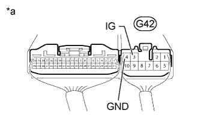
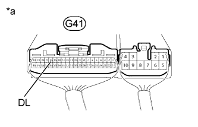
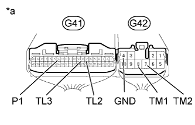
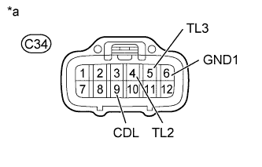
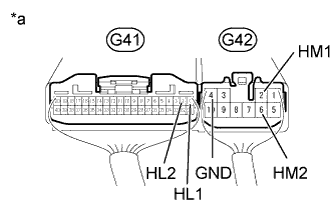
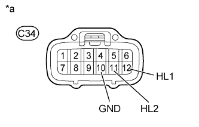

TRANSFER SYSTEM > INSPECTION |
| 1. INSPECT INDICATOR LIGHT |
4LO Indicator Light:
Turn the engine switch on (IG).
Move the shift lever to N (vehicle is stopped).
Change the transfer position switch from H4 to L4.
Check the 4LO indicator light.
Center Differential Lock Indicator Light:
Turn the engine switch on (IG).
Change the center differential lock switch from Free to Lock.
Check the center differential lock indicator light.
| 2. INSPECT FOUR WHEEL DRIVE CONTROL ECU (POWER SUPPLY) |
|  |
Measure the voltage according to the value(s) in the table below.
| Tester Connection | Switch Condition | Specified Condition |
| G42-3 (IG) - Body ground | Engine switch on (IG) | 11 to 14 V |
| *a | Component with harness connected (Four Wheel Drive Control ECU) |
Measure the resistance according to the value(s) in the table below.
| Tester Connection | Condition | Specified Condition |
| G42-4 (GND) - Body ground | Always | Below 1 Ω |
| 3. INSPECT FOUR WHEEL DRIVE CONTROL ECU (TRANSFER POSITION SWITCH) |
Measure the voltage according to the value(s) in the table below.
| Tester Connection | Switch Condition | Specified Condition |
| G41-13 (LO) - Body ground | Engine switch on (IG) Transfer position switch H4 | 10.5 to 14 V |
| Engine switch on (IG) Transfer position switch L4 | Below 1.5 V |
| *a | Component with harness connected (Four Wheel Drive Control ECU) |
| 4. INSPECT FOUR WHEEL DRIVE CONTROL ECU (CENTER DIFFERENTIAL LOCK SWITCH)) |
|  |
Measure the voltage according to the value(s) in the table below.
| Tester Connection | Switch Condition | Specified Condition |
| G41-16 (DL) - Body ground | Engine switch on (IG) Center differential lock switch ON | Below 1.5 V |
| Engine switch on (IG) Center differential lock switch OFF | 9.5 to 14 V |
| *a | Component with harness connected (Four Wheel Drive Control ECU) |
| 5. INSPECT MULTI MODE TRANSFER SHIFT ACTUATOR |
Check the harness and connector between four wheel drive control ECU and transfer shift actuator assembly (multi mode transfer shift actuator).
Disconnect the C34 actuator connector.
Disconnect the G41 and G42 ECU connectors.
Measure the resistance according to the value(s) in the table below.
| *a | Front view of wire harness connector (to Four Wheel Drive Control ECU) | *b | Front view of wire harness connector (to Transfer Shift Actuator Assembly) |
| Tester Connection | Condition | Specified Condition |
| G41-7 (TL2) - C34-4 (TL2) | Always | Below 1 Ω |
| G41-7 (TL2) - Body ground | Always | 100 kΩ or higher |
| G41-8 (TL3) - C34-5 (TL3) | Always | Below 1 Ω |
| G41-8 (TL3) - Body ground | Always | 100 kΩ or higher |
| G41-14 (P1) - C34-9 (CDL) | Always | Below 1 Ω |
| G41-14 (P1) - Body ground | Always | 100 kΩ or higher |
| G42-7 (TM2) - C34-1 (TM2) | Always | Below 1 Ω |
| G42-7 (TM2) - Body ground | Always | 100 kΩ or higher |
| G42-8 (TM1) - C34-2 (TM1) | Always | Below 1 Ω |
| G42-8 (TM1) - Body ground | Always | 100 kΩ or higher |
| C34-6 (GND1) - Body ground | Always | Below 1 Ω |
| C34-10 (GND) - Body ground | Always | Below 1 Ω |
Check the four wheel drive control ECU (multi mode transfer shift actuator circuit).
Connect the G41 and G42 ECU connectors.
Connect the C34 actuator connector.
|  |
Measure the voltage according to the value(s) in the table below.
| Tester Connection | Switch Condition | Specified Condition |
| G42-8 (TM1) - G42-4 (GND) | Engine switch on (IG) Center differential lock switch FREE → LOCK (During operation of multi mode transfer shift actuator motor from FREE to LOCK) | 10 to 14 V |
| Engine switch on (IG) Center differential lock switch FREE → LOCK (Multi mode transfer shift actuator motor stopped) | Below 1.5 V | |
| G42-7 (TM2) - G42-4 (GND) | Engine switch on (IG) Center differential lock switch LOCK → FREE (During operation of multi mode transfer shift actuator motor from LOCK to FREE) | 10 to 14 V |
| Engine switch on (IG) Center differential lock switch LOCK → FREE (Multi mode transfer shift actuator motor stopped) | Below 1.5 V | |
| G41-7 (TL2) - G42-4 (GND) | Engine switch on (IG) Center differential lock switch LOCK | Below 1.5 V |
| Engine switch on (IG) Center differential lock switch FREE | 10.5 to 14 V | |
| G41-8 (TL3) - G42-4 (GND) | Engine switch on (IG) Center differential lock switch LOCK | 10.5 to 14 V |
| Engine switch on (IG) Center differential lock switch FREE | Below 1.5 V | |
| G41-14 (P1) - G42-4 (GND) | Engine switch on (IG) Center differential lock switch FREE | 9.5 to 14 V |
| Engine switch on (IG) Center differential lock switch LOCK | Below 1.5 V |
| *a | Component with harness connected (Four Wheel Drive Control ECU) |
Check the four wheel drive control ECU output voltage.
Disconnect the C34 actuator connector.
Connect the G41 and G42 ECU connectors.
|  |
Measure the voltage according to the value(s) in the table below.
| Tester Connection | Switch Condition | Specified Condition |
| C34-9 (CDL) - C34-6 (GND1) | Engine switch on (IG) | 9.5 to 14 V |
| C34-4 (TL2) - C34-6 (GND1) | Engine switch on (IG) | 10.5 to 14 V |
| C34-5 (TL3) - C34-6 (GND1) | Engine switch on (IG) | 10.5 to 14 V |
| *a | Front view of wire harness connector (to Transfer Shift Actuator Assembly) |
Inspect the multi mode transfer shift actuator (transfer shift actuator assembly).
Remove the transfer shift actuator assembly (Click here).
Check the LOCK to FREE switch.
Connect lines via a relay as shown in the illustration, then check that the actuator fork moves from the LOCK to FREE position.
| *1 | DEF Relay | - | - |
| *a | Component without harness connected (Transfer Shift Actuator Assembly) | *b | LOCK to FREE |
| Tester Connection | Switch Condition | Specified Condition |
| 4 (TL2) - 6 (GND1) | After LOCK to FREE switch is complete | 0.5 MΩ or higher |
| 5 (TL3) - 6 (GND1) | After LOCK to FREE switch is complete | Below 12.5 Ω |
| 9 (CDL) - 10 (GND) | After LOCK to FREE switch is complete | 0.5 MΩ or higher |
Check the FREE to LOCK switch.
Connect lines via a relay as shown in the illustration, then check that the actuator fork moves from the FREE to LOCK position.
| *1 | DEF Relay | - | - |
| *a | Component without harness connected (Transfer Shift Actuator Assembly) | *b | FREE to LOCK |
| Tester Connection | Switch Condition | Specified Condition |
| 4 (TL2) - 6 (GND1) | After FREE to LOCK switch is complete | Below 12.5 Ω |
| 5 (TL3) - 6 (GND1) | After FREE to LOCK switch is complete | 0.5 MΩ or higher |
| 9 (CDL) - 10 (GND) | After FREE to LOCK switch is complete | Below 12.5 Ω |
| 6. INSPECT HIGH-LOW TRANSFER SHIFT ACTUATOR |
Check the harness and connector between four wheel drive control ECU and transfer shift actuator (high-low transfer shift actuator).
Disconnect the C34 actuator connector.
Disconnect the G41 and G42 ECU connector.
Measure the resistance according to the value(s) in the table below.
| *a | Front view of wire harness connector (to Four Wheel Drive Control ECU) | *b | Front view of wire harness connector (to Transfer Shift Actuator Assembly) |
| Tester Connection | Condition | Specified Condition |
| G41-1 (HL1) - C34-12 (HL1) | Always | Below 1 Ω |
| G41-1 (HL1) - Body ground | Always | 100 kΩ or higher |
| G41-2 (HL2) - C34-11 (HL2) | Always | Below 1 Ω |
| G41-2 (HL2) - Body ground | Always | 100 kΩ or higher |
| G42-2 (HM1) - C34-8 (HM1) | Always | Below 1 Ω |
| G42-2 (HM1) - Body ground | Always | 100 kΩ or higher |
| G42-6 (HM2) - C34-7 (HM2) | Always | Below 1 Ω |
| G42-6 (HM2) - Body ground | Always | 100 kΩ or higher |
| C34-10 (GND) - Body ground | Always | Below 1 Ω |
Check the four wheel drive control ECU (high-low transfer shift actuator circuit).
Connect the G41 and G42 ECU connectors.
Connect the C34 actuator connector.
|  |
Measure the voltage according to the value(s) in the table below.
| Tester Connection | Switch Condition | Specified Condition |
| G42-6 (HM2) - G42-4 (GND) | Engine switch on (IG) Transfer position switch L4 → H4 (During operation of high-low transfer shift actuator motor from LOW to HIGH) | 10 to 14 V |
| Engine switch on (IG) Transfer position switch L4 → H4 (High-low transfer shift actuator motor stopped) | Below 1.5 V | |
| G42-2 (HM1) - G42-4 (GND) | Engine switch on (IG) Transfer position switch H4 → L4 (During operation of high-low transfer shift actuator motor from HIGH to LOW) | 10 to 14 V |
| Engine switch on (IG) Transfer position switch H4 → L4 (High-low transfer shift actuator motor stopped) | Below 1.5 V | |
| G41-1 (HL1) - G42-4 (GND) | Engine switch on (IG) Transfer position switch H4 | 10.5 to 14 V |
| Engine switch on (IG) Transfer position switch L4 | Below 1.5 V | |
| G41-2 (HL2) - G42-4 (GND) | Engine switch on (IG) Transfer position switch H4 | Below 1.5 V |
| Engine switch on (IG) Transfer position switch L4 | 10.5 to 14 V |
| *a | Component with harness connected (Four Wheel Drive Control ECU) |
Check the four wheel drive control ECU output voltage.
Connect the G41 and G42 ECU connectors.
Disconnect the C34 actuator connector.
|  |
Measure the voltage according to the value(s) in the table below.
| Tester Connection | Switch Condition | Specified Condition |
| C34-11 (HL2) - C34-10 (GND) | Engine switch on (IG) | 10.5 to 14 V |
| C34-12 (HL1) - C34-10 (GND) | Engine switch on (IG) | 10.5 to 14 V |
| *a | Front view of wire harness connector (to Transfer Shift Actuator Assembly) |
Inspect the high-low transfer shift actuator (transfer shift actuator assembly).
Remove the transfer shift actuator assembly (Click here).
Check the HIGH to LOW switch.
Connect lines via a relay as shown in the illustration, then check that the actuator fork moves from the HIGH to LOW position.
| *1 | DEF Relay | - | - |
| *a | Component without harness connected (Transfer Shift Actuator Assembly) | *b | HIGH to LOW |
| Tester Connection | Switch Condition | Specified Condition |
| 12 (HL1) - 10 (GND) | After HIGH to LOW switch is complete | Below 12.5 Ω |
| 11 (HL2) - 10 (GND) | After HIGH to LOW switch is complete | 0.5 MΩ or higher |
Check the LOW to HIGH switch.
Connect lines via a relay as shown in the illustration, then check that the actuator fork moves from the LOW to HIGH position.
| *1 | DEF Relay | - | - |
| *a | Component without harness connected (Transfer Shift Actuator Assembly) | *b | LOW to HIGH |
| Tester Connection | Switch Condition | Specified Condition |
| 12 (HL1) - 10 (GND) | After LOW to HIGH switch is complete | 0.5 MΩ or higher |
| 11 (HL2) - 10 (GND) | After LOW to HIGH switch is complete | Below 12.5 Ω |